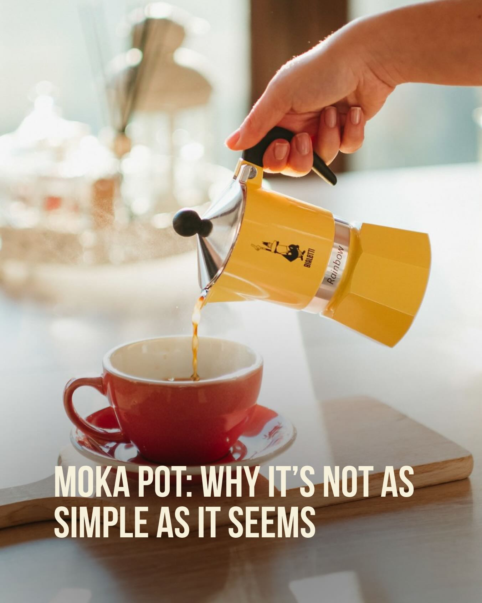
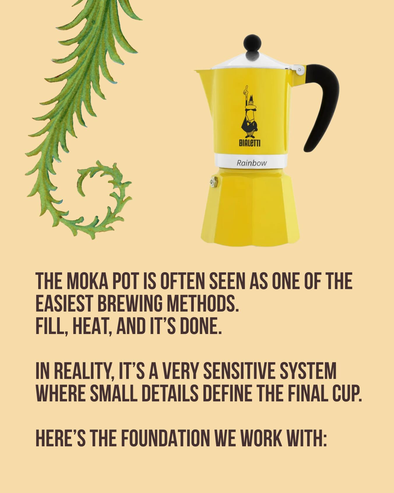
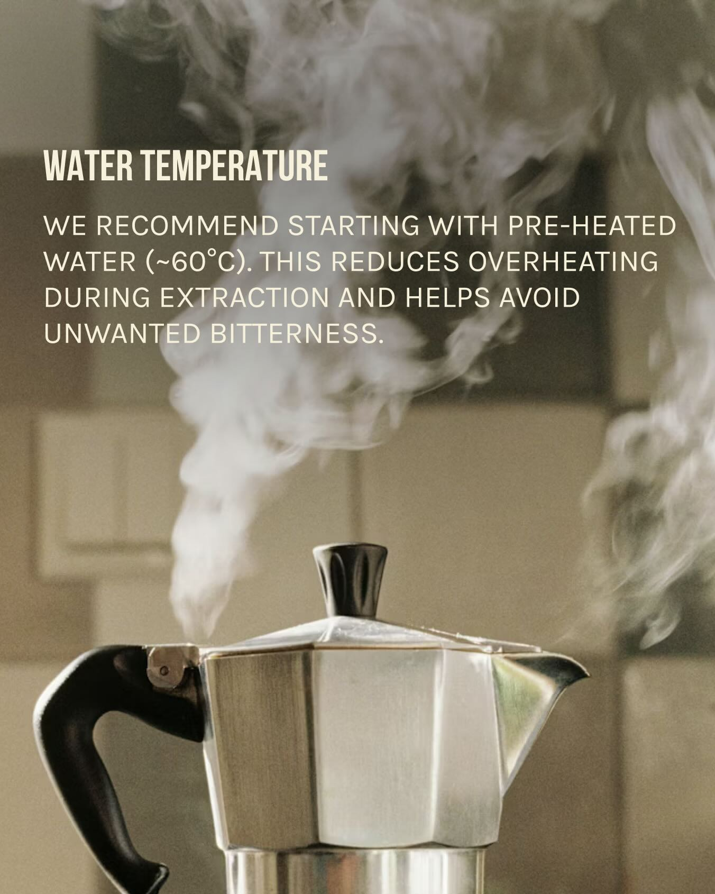
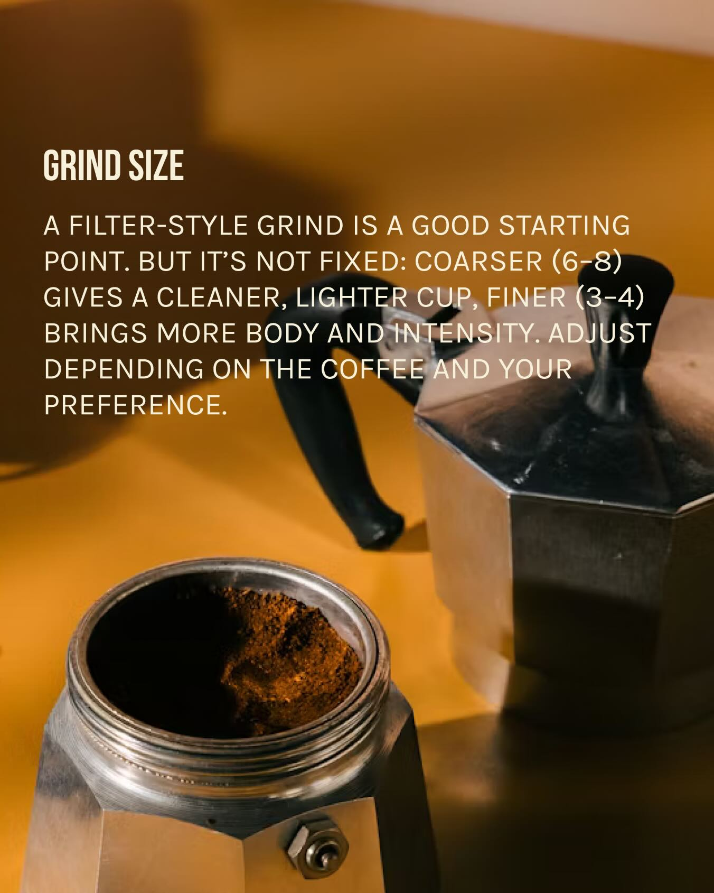
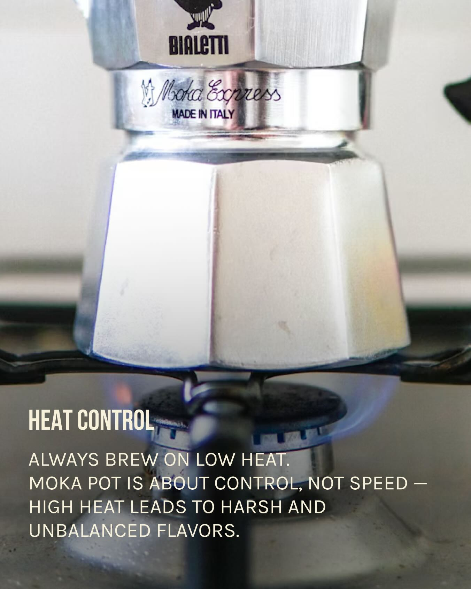
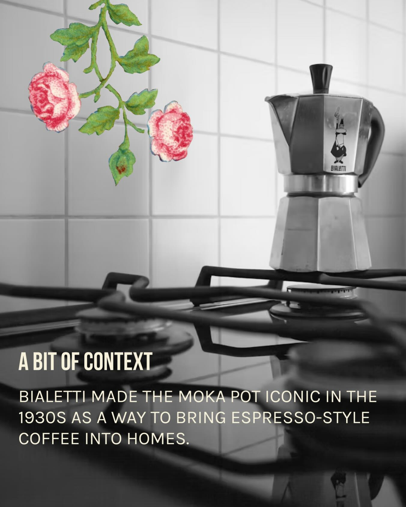

Instagram Post

Bialetti Rainbow MOKA POT: WHY IT'S NOT AS SIMPLE...
carousel (9 slides) (enriched by ClaudeClaw)
Summary
Bialetti Rainbow MOKA POT: WHY IT'S NOT AS SIMPLE AS IT S... | Bialetti Rainbow MOKA POT: WHY IT'S NOT AS SIMPLE AS IT S... | BIALETTI Rainbow THE MOKA POT IS OFTEN SEEN AS ONE OF THE... | WATER TEMPERATURE WE RECOMMEND STARTING WITH PRE-HEATED W... | GRIND SIZE A FILTER-STYLE GRIND IS A GOOD STARTING POINT | WATER QUALITY MINERAL CONTENT PLAYS A KEY ROLE IN EXTRACTION | BIALETTI Moka Express M...
1
Bialetti Rainbow MOKA POT: WHY IT'S NOT AS SIMPLE AS IT SEEMS
A hand pours coffee from a yellow Bialetti moka pot into a red cup on a light wooden surface.
2
Bialetti Rainbow MOKA POT: WHY IT'S NOT AS SIMPLE AS IT SEEMS
A person's hand pours coffee from a yellow Bialetti moka pot into a red ceramic cup on a wooden surface.
3
BIALETTI Rainbow THE MOKA POT IS OFTEN SEEN AS ONE OF THE EASIEST BREWING METHODS. FILL, HEAT, AND IT'S DONE. IN REALITY, IT'S A VERY SENSITIVE SYSTEM WHERE SMALL DETAILS DEFINE THE FINAL CUP. HERE'S THE FOUNDATION WE WORK WITH:
A yellow Bialetti Moka pot is displayed on a light orange background next to a green, swirling vine illustration, with text describing Moka pot brewing below.
4
WATER TEMPERATURE WE RECOMMEND STARTING WITH PRE-HEATED WATER (~60°C). THIS REDUCES OVERHEATING DURING EXTRACTION AND HELPS AVOID UNWANTED BITTERNESS.
A silver Moka pot with steam rising from its spout and lid is shown against a blurred, light brown background.
5
GRIND SIZE A FILTER-STYLE GRIND IS A GOOD STARTING POINT. BUT IT'S NOT FIXED: COARSER (6-8) GIVES A CLEANER, LIGHTER CUP, FINER (3-4) BRINGS MORE BODY AND INTENSITY. ADJUST DEPENDING ON THE COFFEE AND YOUR PREFERENCE.
A silver Moka pot, with its lower chamber filled with ground coffee, sits on a warm orange-brown surface.
6
WATER QUALITY MINERAL CONTENT PLAYS A KEY ROLE IN EXTRACTION. USING STABLE WATER (LIKE BAKHMARO) RESULTS IN A CLEANER AND MORE CONSISTENT CUP.
A clear, ribbed glass filled with water sits on a reflective surface against a solid orange background.
7
BIALETTI Moka Express MADE IN ITALY HEAT CONTROL ALWAYS BREW ON LOW HEAT. MOKA POT IS ABOUT CONTROL, NOT SPEED – HIGH HEAT LEADS TO HARSH AND UNBALANCED FLAVORS.
A silver Moka pot sits on a gas stove burner with a blue flame visible beneath it.
8
EXTRACTION TIMING AS SOON AS YOU HEAR THE FIRST GURGLING SOUNDS – REMOVE FROM HEAT. ANYTHING AFTER THAT POINT PUSHES THE COFFEE INTO OVER-EXTRACTION.
A Moka pot with its lid open is shown on a stovetop, with freshly brewed coffee bubbling up through its central spout.
9
A BIT OF CONTEXT BIALETTI MADE THE MOKA POT ICONIC IN THE 1930S AS A WAY TO BRING ESPRESSO-STYLE COFFEE INTO HOMES. BIALETTI
A Bialetti moka pot sits on a black gas stovetop in front of a white tiled wall, with watercolor-style pink roses and green leaves floating in the upper left.
All slides




